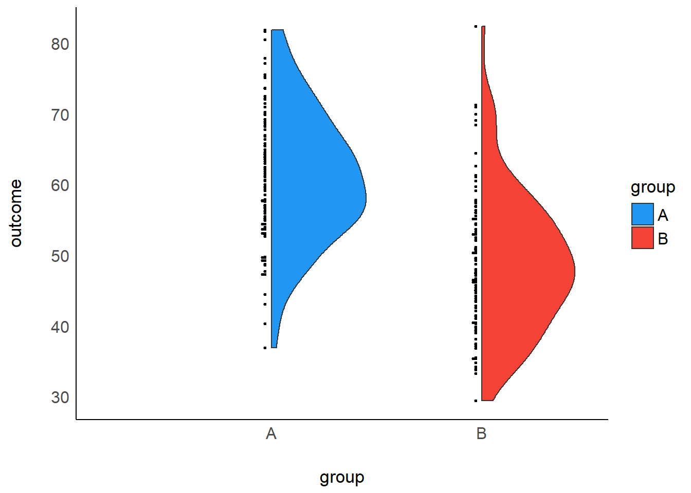

chapter: 3 平均値差の効果量
本章では、２群間の平均値差に関する効果量とその信頼区間の計算方法を紹介する。平均値差に関する標準化効果量には複数の種類が存在するが、研究によってそれらの呼び方や使用する記号が異なることがあるので注意が必要である。
3.1 独立した2群の平均値差
2つの独立した母集団A, Bから抽出した2標本の平均値差について検討する。いま、2つの正規母集団 \(\mathcal{N_A}(60, 100), \mathcal{N_B}(50, 100)\) から無作為抽出によって100個ずつ（\(m=100, n=100\)）の独立な標本を得たとする。\[ A_1, A_2, ..., A_{m} \sim \mathcal{N}(60, 100),\\ B_1, B_2, ..., B_{n} \sim \mathcal{N}(50, 100) \]
m <- 100 ; n <- 100 # サンプルサイズ
set.seed(123) # 乱数の種の固定
A <- rnorm(m, 60, 10) # 正規分布N(50,100)からm個の乱数を発生
B <- rnorm(n, 50, 10) # 正規分布N(60,100)からn個の乱数を発生
独立した2群の平均値差を示す効果量には、非標準化平均値差と標準化平均値差の2種類がある。また、後者については、等分散が仮定できる場合とできない場合に分けて考えることができる。以下で順に紹介していく。
3.1.1 非標準化平均値差
2群の平均値差Dは、以下の式で求められる。これは、平均値と同様に非標準化効果量の一種であり、元の測定単位における比較に関心がある場合などに有用である。
\[ 平均値差D=\bar{A}-\bar{B} \] 平均値差Dは、母平均値差 \(\mu_A-\mu_B\) の一致推定量かつ不偏推定量であり、平均\(\mu_A-\mu_B\)、分散 \(\sigma_A^2/m+\sigma_B^2/n\) の正規分布に従う。母分散が既知の場合は、以下のように95%信頼区間を構成すればよい。
\[ D-1.96\sqrt{\frac{\sigma_A^2}{m}+\frac{\sigma_B^2}{n}}\leq\mu_A-\mu_B\leq D+1.96\sqrt{\frac{\sigma_A^2}{m}+\frac{\sigma_B^2}{n}} \] Rを利用すれば、以下のように計算できる。
D <- mean(A) - mean(B) # 非標準化平均値差
D - 1.96*sqrt(100/m+100/n) # 95%信頼区間の下限値## [1] 9.207668D + 1.96*sqrt(100/m+100/n) # 95%信頼区間の上限値## [1] 14.75139母分散が未知であるが集団間で等しいことが分かっている場合、2群に共通した分散を以下の通り求めて、母分散の推定値として利用する。ここで、\(\hat\sigma_A^2\) は群Aの不偏分散、\(\hat\sigma_B^2\) は群Bの不偏分差を指す。 \[ \hat\sigma^2=\frac{(m-1)\hat\sigma_A^2+(n-1)\hat\sigma_B^2}{m+n-2} \] 平均値差の標本分布として、正規分布ではなく自由度 \(m+n-2\) のｔ分布を利用して、以下の通り95%信頼区間を求める。 \[ D-t_{0.025}(m+n-2)\sqrt{\frac{\hat\sigma^2}{m}+\frac{\hat\sigma^2}{n}}\leq\mu_A-\mu_B\leq D+t_{0.975}(m+n-2)\sqrt{\frac{\hat\sigma^2}{m}+\frac{\hat\sigma^2}{n}} \] Rを利用すれば、以下のように計算できる。
pooled_var <- ((m-1)*var(A)+(n-1)*var(B))/(m+n-2) # 2群に共通した分散の推定値
D - qt(0.025, m+n-2, lower.tail = F)*sqrt(pooled_var/m + pooled_var/n) # 95%信頼区間の下限値## [1] 9.357192D + qt(0.975, m+n-2)*sqrt(pooled_var/m + pooled_var/n) # 95%信頼区間の上限値## [1] 14.60186既存の関数を利用して95%信頼区間を求めても結果は一致する。
t.test(A, B, var.equal = T)$conf.int## [1] 9.357192 14.601862
## attr(,"conf.level")
## [1] 0.953.1.2 標準化平均値差
2群の標準化平均値差に関する母効果量\(\delta\)は以下の式で定義される。 \[ \delta=\frac{μ_A-μ_B}{σ} \]ここで\(μ_A\)，\(μ_B\)はそれぞれ群A, 群Bの母平均、\(σ\)は2群に共通な母標準偏差である。
得られた標本から母効果量\(\delta\)を推定する場合、その推定量を標本効果量と呼ぶ。 標準化平均値差の標本効果量にはいくつかの種類が提案されている。等分散を仮定する場合と等分散を仮定しない場合に分けて順に紹介する。
使用するデータは前節と同様である。
m <- 100 ; n <- 100 # サンプルサイズ
set.seed(123) # 乱数の種の固定
A <- rnorm(m, 60, 10) # 正規分布N(50,100)からm個の乱数を発生
B <- rnorm(n, 50, 10) # 正規分布N(60,100)からn個の乱数を発生なお、統計的帰無仮説検定によって2群の平均値差を検討する方法としてはｔ検定が知られており、検定統計量ｔがｔ分布に従うことを利用して、群間で平均値に差が無いという帰無仮説を棄却できるかどうかを判断する。
t.test(A, B, var.equal = T) # 等分散を仮定する場合（Student's t-test）##
## Two Sample t-test
##
## data: A and B
## t = 9.0087, df = 198, p-value < 2.2e-16
## alternative hypothesis: true difference in means is not equal to 0
## 95 percent confidence interval:
## 9.357192 14.601862
## sample estimates:
## mean of x mean of y
## 60.90406 48.92453t.test(A, B, var.equal = F) # 等分散を仮定しない場合（Welch's t-test）##
## Welch Two Sample t-test
##
## data: A and B
## t = 9.0087, df = 197.35, p-value < 2.2e-16
## alternative hypothesis: true difference in means is not equal to 0
## 95 percent confidence interval:
## 9.357138 14.601916
## sample estimates:
## mean of x mean of y
## 60.90406 48.924533.1.3 等分散を仮定する場合
等分散を仮定する場合の標本効果量は主に2種類ある。 これは、2つの集団の分散をどのような計算式で統合（pool）するかの違いである。分散を統合する計算式には、標本分散を用いるものと不偏分散を用いるものがある。
標本分散を用いて統合する場合、以下の式になる。ここで、\(s_A^2\) は群Aの標本分散、\(s_B^2\) は群Bの標本分差を指す。
\[ s_A^2=\frac{1}{m}\sum_{i=1}^{m}(A_i-\bar{A}), s_B^2=\frac{1}{n}\sum_{i=1}^{n}(B_i-\bar{B}), \\ s_{pooled}=\sqrt\frac{ms_A^2+ns_B^2}{m+n} \] Rを利用すれば、以下のように計算できる。
Va <- var(A)*(m-1)/m # Aの標本分散
Vb <- var(B)*(n-1)/n # Bの標本分散
s_pooled <- sqrt((m*Va+n*Vb)/(m+n))不偏分散を用いて統合する場合、以下の式になる。ここで、\(\hat\sigma_A^2\) は群Aの不偏分散、\(\hat\sigma_B^2\) は群Bの不偏分差を指す。
\[ \hat\sigma_A^2=\frac{1}{m-1}\sum_{i=1}^{m}(A_i-\bar{A}), \hat\sigma_B^2=\frac{1}{n-1}\sum_{i=1}^{n}(B_i-\bar{B}) \\ \hat\sigma=\sqrt\frac{(m-1)\hat\sigma_A^2+(n-1)\hat\sigma_B^2}{m+n-2} \] Rを利用すれば、以下のように計算できる。
sigma <- sqrt(((m-1)*var(A)+(n-1)*var(B))/(m+n-2))2種類の推定量の間には、以下のような関係がある。 \[ \hat\sigma=s_{pooled}\sqrt{\frac{m+n}{m+n-2}} \]
2種類の推定量を用いることでそれぞれ、Hedges & Olkin の \(d\) とCohenの \(d_s\) という効果量が計算できる。順に紹介していく。
3.1.3.1 Hedges & Olkin’s \(d\)
1つ目は、Hedges & Olkin の \(d\)であり、平均値差を2群に共通した標準偏差（\(s_{pooled}\)）で割ることで得られる。これは、母効果量\(\delta\)の最尤推定量である(Hedges & Olkin, 1985)。この式で計算したものを Cohen’s \(d\) と表現している文献もあるので、注意が必要である。
\[ d =\frac{\bar{A}-\bar{B}}{s_{pooled}} \]
誤差分散は以下の式で求められる。誤差分散の平方根を求めれば標準誤差になる。
\[ V_d=\frac{m+n}{mn}+\frac{d^2}{2(m+n-2)} \] Rを利用すれば、Hedges & Olkin の \(d\) は以下のように計算できる。
(mean(A)-mean(B))/s_pooled # Hedges & Olkin's d## [1] 1.2804413.1.3.2 Cohen’s \(d_s\)
2つ目は、Cohenの \(d_s\) であり、平均値差を2群に共通した標準偏差（\(\hat\sigma\)）で割ることで得られる(Cohen, 1988)。この式で計算したものを Cohen’s \(d\) や Hedges’ \(g\) と表現している文献もあるので、注意が必要である。名称の混乱問題については本章の最後で解説する。
\[ Cohen's~d_s =\frac{\bar{A}-\bar{B}}{\hat\sigma} \] 誤差分散は以下の式で求められる。誤差分散の平方根を求めれば標準誤差になる。 \[ V_{d_s}=\frac{m+n}{mn}+\frac {d_s^2}{2(m+n)} \] Rを利用すれば、Cohenの \(d_s\) は以下のように計算できる。
(mean(A)-mean(B))/sigma # Cohen's d_s## [1] 1.274023既存のパッケージを利用した場合でも同様の結果が得られる。
library(effectsize)
cohens_d(A, B) # Cohen's d_s## Cohen's d | 95% CI
## ------------------------
## 1.27 | [0.97, 1.58]
##
## - Estimated using pooled SD.3.1.4 等分散を仮定しない場合
3.1.4.1 Glass’s \(\Delta\)
等分散を仮定しない場合の標本効果量としては、Glassの \(\Delta\) がある。 これは、実験デザインに由来して群間で分散が異なることが想定される場合に有用である。 例えば、実験群にのみ介入を行い、その介入が分散を拡大させると考えられる場合、介入を行っていない統制群の分散の推定値を効果量の計算に用いる方が適切だと考えられる(Grissom & Kim, 2001)。Glassの \(\Delta\) はこのような考え方に基づき、2群のうち片方の群の分散（標準偏差）のみを用いて効果量を計算する。
なお、使用するデータは、分散を変更している。
m <- 100 ; n <- 100 # サンプルサイズ
set.seed(123) # 乱数の種の固定
A <- rnorm(m, 60, 12) # 正規分布N(50,144)からm個の乱数を発生
B <- rnorm(n, 50, 10) # 正規分布N(60,100)からn個の乱数を発生Glassの \(\Delta\) は以下の計算式の通り、平均値差を片方の群（統制群）の標準偏差で割ることで得られる(Glass et al., 1981)。ここで、\(\hat\sigma_B^2\) は群Bの不偏分差を指す。ここでは、群Bが統制群であることを想定している。
\[ Glass's~\Delta =\frac{\bar{A}-\bar{B}}{\hat\sigma_B} \]
誤差分散は以下の式で求められる(Kline, 2004, p. 108)。\[ V_{\Delta}=\frac{m+n}{mn}+\frac {\Delta^2}{2(n-1)} \] Rを利用すれば、Glassの \(\Delta\) は以下のように計算できる。
(mean(A)-mean(B))/sd(B) # Glass's delta## [1] 1.25755既存のパッケージを利用した場合でも同様の結果が得られる。
library(effectsize)
glass_delta(A, B) # Glass's delta## Glass' delta | 95% CI
## ---------------------------
## 1.26 | [0.91, 1.60]3.1.4.2 Cohen’s \(d_s\)
なお、等分散が仮定できるが、分散の推定値に群間で差があった場合は、両群の情報を活用できる \(d\) や \(d_s\) を使用した方がいいだろう(Grissom & Kim, 2001)。例えば、分散の推定値に群間で差があった場合のCohenの \(d_s\) は以下の通り計算することが推奨されている(Delacre et al., 2021)。ここで、\(\hat\sigma_A^2\) は群Aの不偏分散、\(\hat\sigma_B^2\) は群Bの不偏分差を指す。
\[ Cohen's~d_s=\frac{\bar{A}-\bar{B}}{\sqrt{(\hat\sigma_A^2+\hat\sigma_B^2)/2}} \]
Rを利用すれば、分散が異なる場合のCohenの \(d_s\) は以下のように計算できる。
(mean(A)-mean(B))/sqrt((var(A)+var(B))/2)## [1] 1.176983既存のパッケージを利用した場合でも同様の結果が得られる。
library(effectsize)
cohens_d(A, B, pooled_sd = F)## Cohen's d | 95% CI
## ------------------------
## 1.18 | [0.87, 1.48]
##
## - Estimated using un-pooled SD.3.1.5 信頼区間
標準化平均値差の効果量の信頼区間を算出する方法には、1．標準誤差を用いる方法、2．非心ｔ分布に基づく方法、3．ブートストラップ法の3種類がある(井上俊哉, 2008)。以下で順に紹介する。なお、使用するデータは以下の通りである。
m <- 100 ; n <- 100 # サンプルサイズ
set.seed(123) # 乱数の種の固定
A <- rnorm(m, 60, 10) # 正規分布N(60,100)からm個の乱数を発生
B <- rnorm(n, 50, 10) # 正規分布N(50,100)からn個の乱数を発生3.1.5.1 標準誤差を用いる方法
1つ目は、標準誤差 \(se\)（誤差分散\(V_{\hat\delta}\)の平方根）を用いる簡易的な方法である。効果量の標本分布を正規分布で近似することで、95％信頼区間は以下のように計算できる(Nakagawa & Cuthill, 2007)。ここで、\(\hat\delta\) は、母効果量 \(\delta\) の推定値である標本効果量（\(d, d_S, \Delta\)）を指す。
\[ \hat{\delta}-1.96*se\leq\delta\leq\hat{\delta}+1.96*se \]
例えば、Cohen’s \(d_s\) の95%信頼区間は以下のように求められる。
library(effectsize)
ds <- cohens_d(A, B) # Cohen's d_s
se_ds <- sqrt((m+n)/(m*n)+(ds$Cohens_d^2/(2*(m+n))))
ds$Cohens_d - 1.96*se_ds # 95%信頼区間の下限値## [1] 0.9700153ds$Cohens_d + 1.96*se_ds # 95%信頼区間の上限値## [1] 1.57803しかし、これは簡易的な方法であって、正確ではない。より正確な方法としては次の2種類がある。
3.1.5.2 非心ｔ分布に基づく方法
2つ目は、非心ｔ分布を用いる方法である。これは、以下の式で計算される検定統計量\(t\)が帰無仮説が偽のときに、非心度\(λ\)、自由度\(df\)の非心ｔ分布に従うことを利用する方法である。
\[ t=d_s*\sqrt{\frac{mn}{m+n}},\\ \lambda=\delta*\sqrt{\frac{mn}{m+n}},\\ \delta=\lambda*\sqrt{\frac{m+n}{mn}},\\ df=m+n-2 \]
今回の例の場合、自由度\(df=198\)の非心ｔ分布を非心度\(λ\)を変えながら描いていったとき、検定統計量\(t\)の実現値\(t=9.008702\)が上側確率0.975に一致する非心度\(λ_L\)を求める。そして、それに\(\sqrt{\frac{m+n}{mn}}\) をかけることで効果量\(\delta\)に変換したものが効果量\(d_s\)の信頼区間の上限値になる。同様に、検定統計量\(t\)の実現値が非心ｔ分布の下側確率0.025に一致する非心度\(λ_H\)を求めて変換すれば効果量\(d_s\)の信頼区間の下限値になる。非心ｔ分布の詳細については、(南風原朝和, 2014)などを参照されたい。※Glass’s \(\Delta\) の場合は、自由度\(df\)を\(n-1\)とする。
Rを利用すれば、Cohen’s \(d_s\) の95%信頼区間は以下のように求められる。
library(effectsize)
ds <- cohens_d(A, B) # Cohen's d_s
t <- ds$Cohens_d*sqrt(m*n/(m+n)) # t値
df <- m+n-2 # 自由度
library(MBESS)
lambda.ci <- conf.limits.nct(t.value=t, df=df, conf.level = .95) # 非心t分布の95%点
lambda.ci$Lower.Limit*sqrt((m+n)/(m*n)) # 95%信頼区間の下限値## [1] 0.968447lambda.ci$Upper.Limit*sqrt((m+n)/(m*n)) # 95%信頼区間の上限値## [1] 1.576903既存のパッケージを利用した場合でも同様の結果が得られる。
library(effectsize)
cohens_d(A, B) # Cohen's d_s## Cohen's d | 95% CI
## ------------------------
## 1.27 | [0.97, 1.58]
##
## - Estimated using pooled SD.ただし、この方法ではGlassの \(\Delta\) の信頼区間を求めることができない（等分散の場合を除く）。その場合、次に示すブートストラップ法を用いる。
3.1.5.3 ブートストラップ法
3つ目は、ブートストラップ法を用いる方法である。ブートストラップ法とは、標本からの復元抽出を繰り返すことで大きな標本を生成し、そこから得られる近似分布（経験分布）によって標準誤差や信頼区間を求める方法である。ブートストラップ法では、母集団分布を仮定せずに信頼区間を計算することができるため便利である。
ここでは既存のパッケージを利用して、Cohen’s \(d_s\) の95%信頼区間を求める。R=10000回の復元抽出を行うよう設定している。
dat <- data.frame(score=append(A, B), group=rep(c("A", "B"), each=100))
library(bootES)
set.seed(123)
bootES(data = dat, data.col = "score", group.col = "group", contrast = c("B","A"),
effect.type = "cohens.d", ci.conf = 0.95, R = 10000)##
## User-specified lambdas: (B, A)
## Scaled lambdas: (-1, 1)
## 95.00% bca Confidence Interval, 10000 replicates
## Stat CI (Low) CI (High) bias SE
## 1.274 0.931 1.602 0.014 0.172Glassの \(\Delta\) の95%信頼区間も以下のように求められる。
dat <- data.frame(score=append(A, B), group=rep(c("A", "B"), each=100))
library(bootES)
set.seed(123)
bootES(data = dat, data.col = "score", group.col = "group", contrast = c("B","A"),
effect.type = "cohens.d", glass.control = "B", ci.conf = 0.95, R = 10000)##
## User-specified lambdas: (B, A)
## Scaled lambdas: (-1, 1)
## 95.00% bca Confidence Interval, 10000 replicates
## Stat CI (Low) CI (High) bias SE
## 1.239 0.856 1.612 0.023 0.1963.1.6 ベイズ統計に基づくアプローチ
ベイズ統計に基づき、母効果量とその信用区間について推論する方法を紹介する。なお、ここでの説明は、https://sucre-stat.com/2021/06/bayesian-hypothesis-testing-2theory/ を参考にした。
いま、2つの独立した母集団A, Bから抽出した2標本がそれぞれ以下のように正規分布に従うとする。ここでは、それぞれの正規分布の平均が2群に共通した母平均 \(\mu\) からどれだけ離れているかを母効果量パラメータ \(\delta\) を組み込んで表現している。また、群間で分散は共通であると仮定している。
\[ \begin{cases} A_i \sim \mathcal{N}\left(\mu - \cfrac{\delta \sigma}{2}, \sigma^2\right),~~~i=1,\ldots,m \\ B_j \sim \mathcal{N}\left(\mu + \cfrac{\delta \sigma}{2}, \sigma^2\right),~~~j=1,\ldots,n \end{cases} \]
各パラメータの事前分布を以下のように設定する。これは、Jeffreys-Zellner-Siow（JZS）の事前分布と呼ばれるジェフリーズ事前分布の一種である。今回は、\(r=1/\sqrt{2}\) とする。
\[ \begin{cases} \delta \sim \mathrm{Cauchy}(0,r) \\ \pi\left(\sigma^2\right) ∝ \cfrac{1}{\sigma^2} \\ \pi\left(\mu\right) ∝ 1 \end{cases} \]
JZSの事前分布を用いた場合の母効果量 \(\delta\) の事後分布の式については割愛するが、以下のRコードでのMAP推定値と信用区間を求めることができる。
set.seed(123)
A <- rnorm(100, 60, 10)
B <- rnorm(100, 50, 10)
library(BayesFactor)
bf <- ttestBF(A, B, paired = F) # ベイズファクター BF_10
library(bayestestR)
describe_prior(bf) # 事前分布## Parameter Prior_Distribution Prior_Location Prior_Scale
## 1 Difference cauchy 0 0.7071068effectsize(bf, test = NULL) # 事後分布における効果量のMAP推定値## Cohen's d | 95% CI
## ------------------------
## 1.25 | [0.94, 1.56]3.1.7 結果の報告
標準化平均値差を報告する際には、以下の4点を報告すればよい。
- 効果の方向（2つの集団のどちらからどちらを引いたか。値が正の場合はどちらの集団が大きいことになるか。）
- 効果量の種類（\(d, d_S, \Delta\) など）
- 効果量の点推定値
- 推定の不確実性（95%信頼区間など）
Rを用いて以下のように結果報告の表や文章を出力することもできる。
set.seed(123)
A <- rnorm(100, 60, 10)
B <- rnorm(100, 50, 10)
library(report)
report_table(t.test(A, B, var.equal = T)) # 表## Parameter1 | Parameter2 | Mean_Parameter1 | Mean_Parameter2 | Difference | 95% CI | t(198) | p | Method | Alternative | Cohen's d | Cohens_d CI
## -----------------------------------------------------------------------------------------------------------------------------------------------------------------------
## A | B | 60.90 | 48.92 | 11.98 | [9.36, 14.60] | 9.01 | < .001 | Two Sample t-test | two.sided | 1.27 | [0.97, 1.58]report(t.test(A, B, var.equal = T)) # 文章## Effect sizes were labelled following Cohen's (1988) recommendations.
##
## The Two Sample t-test testing the difference between A and B (mean of x = 60.90, mean of y = 48.92) suggests that the effect is positive, statistically significant, and large (difference = 11.98, 95% CI [9.36, 14.60], t(198) = 9.01, p < .001; Cohen's d = 1.27, 95% CI [0.97, 1.58])3.2 対応のある2群の平均値差
同一集団に対する2回の測定を行う状況を考える（プレ・ポストデザイン）。いま、下記の二変量正規分布に独立に従うn=100の2組（プレ・ポスト）の標本を得たとする。これは、プレの母平均が50、母分散が100、ポストの母平均が60、母分散が100、プレ・ポストの母相関が0.5であることを意味している。
\[ \begin{pmatrix} X_{pre} \\ X_{post} \end{pmatrix} \sim MultiNormal \left( \boldsymbol{\mu}, \boldsymbol{\Sigma} \right),\\ \boldsymbol{\mu} = \begin{pmatrix} 50 \\ 60 \end{pmatrix}, \boldsymbol{\Sigma} = \begin{pmatrix} 100 & 50 \\ 50 & 100 \end{pmatrix}\\ \]
2つの測定値の差も正規分布に従う。
\[ X_{post}-X_{pre}\sim Normal(10, 100) \]
Rを使って上記の分布に従う乱数を発生させてみよう。このデータを用いて後に示す効果量を計算していく。
library(mvtnorm)
set.seed(123)
sigma <- matrix(c(100,50,50,100), byrow=TRUE, ncol=2)
mu <- c(50, 60)
n <- 100
dat <- data.frame(rmvnorm(n=n, mean=mu, sigma=sigma))
colnames(dat) <- c("pre","post")3.2.1 非標準化平均値差
プレ・ポストの平均値差Dは、以下の式で求められる。これは非標準化効果量の一種であり、元の測定単位における比較に関心がある場合などに有用である。 \[ D=\bar{x}_{post}-\bar{x}_{pre} \] 誤差分散は以下の式で求められる。\(\hat\sigma^2_{pre}\) はプレの標準偏差、\(\hat\sigma^2_{post}\) はポストの標準偏差、\(r\) はプレとポストの相関係数を指す。 \[ V_D=\frac{\hat\sigma^2_{pre}+\hat\sigma^2_{post}-(2r*\hat\sigma^2_{pre}*\hat\sigma^2_{post})}{n} \]
3.2.2 標準化平均値差
対応のある2群の平均値差の標準化効果量として、対応の無い場合の標準化効果量を用いる方法もある。しかしながら、これはプレ・ポストの相関を考慮しておらず、相関の大きさに関係なく常に一定の値になる。これは対応のあるｔ検定の結果とも対応しないことからやや不自然である。
そこで、相関を考慮した効果量として新たに以下のような母効果量を定義する(Kline, 2004, p. 106)。ここで、\(\mu_{D}\) はプレ・ポストの差の期待値、\(σ_D\) はプレ・ポストの平均値差の母標準偏差、 \(σ\) はプレ・ポストで共通な母標準偏差である。
\[ \delta_p=\frac{\mu_{D}}{\sigma_D}=\frac{\mu_{D}}{\sigma\sqrt{2(1-\rho)}} \] \(\delta\) と \(\delta_p\) では分母の計算式が異なる。 \(\delta_p\) の場合、プレ・ポストの相関を含む平方根が新たに加わっている。式から分かる通り、同じ平均値差の場合、相関が大きくなるほど効果量も大きくなる。相関が大きいことは言い換えれば平均値差の標準偏差が小さいことを意味する。
また、相関の絶対値が0.5のとき、\(\delta\) と \(\delta_p\) は一致する。\(\delta_p\) に \(\sqrt{2(1-\rho)}\) をかければ \(\delta\) に変換できる。
3.2.2.1 Cohen’s \(d_z\)
母効果量 \(\delta_p\) の推定量である標本効果量としては、Cohen の \(d_z\) がある。 これは、プレ・ポストの平均値差を平均値差の標準偏差で割ることで得られる(Cohen, 1988, p. 48)。ここで、\(\hat\sigma_D\) は平均値差の標準偏差、\(\hat\sigma_A^2\) は群Aの不偏分散、\(\hat\sigma_B^2\) は群Bの不偏分差を指す。zという添え字は、Cohen (1988) がXとYの差をZと表現したことに由来する。 \[ D=\bar{x}_{post}-\bar{x}_{pre}\\ Cohen's~d_z=\frac{D}{\hat\sigma_D}=\frac{D}{\sqrt{\hat\sigma_{pre}^2+\hat\sigma_{post}^2-2*cov(x_{pre}, x_{post})}} \] 誤差分散は以下の式で求められる。ここで、\(r\) は、プレとポストの相関係数を指す。
\[ V_{d_z} = \dfrac{2(1-r)}{n}+\frac{d_z^2}{2n} \]
Rを利用すれば、Cohen の \(d_z\) は以下のように計算できる。
mean(dat$post-dat$pre)/sd(dat$post-dat$pre)## [1] 0.9587383既存のパッケージを利用した場合でも同様の結果が得られる。
library(effectsize)
cohens_d(dat$post, dat$pre, paired = T) # Cohen's d_z## Cohen's d | 95% CI
## ------------------------
## 0.96 | [0.72, 1.20]3.2.3 信頼区間
対応のある2群の平均値差の効果量の信頼区間の計算についても、独立した2群の場合と同様の3種類の方法が使用できる。ここでは、非心ｔ分布に基づく方法のみ紹介する。これは、以下の式で計算される検定統計量ｔが帰無仮説が偽のときに、非心度\(λ\)、自由度\(df\)の非心ｔ分布に従うことを利用する方法である。
\[ t=d_z*\sqrt{n},\\ \lambda=\delta*\sqrt{n},\\ df=n-1 \] 今回の例の場合、自由度\(df=99\)の非心ｔ分布を非心度\(λ\)を変えながら描いていったとき、検定統計量\(t\)の実現値\(t=9.587383\)が上側確率0.975に一致する非心度\(λ_L\)を求める。そして、それに\(\sqrt{n}\)をかけることで効果量\(\delta\)に変換したものが効果量\(d_s\)の信頼区間の上限値になる。同様に、検定統計量\(t\)の実現値が非心ｔ分布の下側確率0.025に一致する非心度\(λ_H\)を求めて変換すれば効果量\(d_s\)の信頼区間の下限値になる。非心ｔ分布の詳細については、(南風原朝和, 2014)などを参照されたい。
Rを利用すれば、Cohen’s \(d_s\) の95%信頼区間は以下のように求められる。
library(effectsize)
dz <- cohens_d(dat$post, dat$pre, paired = T) # Cohen's d_z
t <- dz$Cohens_d*sqrt(n) # t値
df <- n-1 # 自由度
library(MBESS)
lambda.ci <- conf.limits.nct(t.value = t, df=df, conf.level = .95) # 非心t分布の95%点
lambda.ci$Lower.Limit/sqrt(n) # 95%信頼区間の下限値## [1] 0.719982lambda.ci$Upper.Limit/sqrt(n) # 95%信頼区間の上限値## [1] 1.194118既存のパッケージを利用した場合でも同様の結果が得られる。
library(effectsize)
cohens_d(dat$post, dat$pre, paired = T) # Cohen's d_z## Cohen's d | 95% CI
## ------------------------
## 0.96 | [0.72, 1.20]3.2.4 結果の報告
対応のある2群の標準化平均値差を報告する際には、以下の5点を報告すればよい。
- 効果の方向（値が正の場合はプレとポストのどちらが大きいことになるか。）
- 効果量の種類（\(d_z\) など）
- 効果量の点推定値
- 推定の不確実性（95%信頼区間など）
- プレとポストの相関係数r
Rを用いて以下のように結果報告の表や文章を出力することもできる。
library(report)
report_table(t.test(dat$post, dat$pre, paired = T)) # 表## Parameter | Group | Difference | t(99) | p | 95% CI | Method | Alternative | Cohen's d | Cohens_d CI
## --------------------------------------------------------------------------------------------------------------------------
## dat$post | dat$pre | 9.80 | 9.59 | < .001 | [7.77, 11.82] | Paired t-test | two.sided | 0.96 | [0.72, 1.20]report(t.test(dat$post, dat$pre, paired = T)) # 文章## Effect sizes were labelled following Cohen's (1988) recommendations.
##
## The Paired t-test testing the difference between dat$post and dat$pre (mean difference = 9.80) suggests that the effect is positive, statistically significant, and large (difference = 9.80, 95% CI [7.77, 11.82], t(99) = 9.59, p < .001; Cohen's d = 0.96, 95% CI [0.72, 1.20])3.3 標準化平均値差の補正
標本から得られた統計量を用いて母効果量の推定値を算出する際に特定のバイアスが生じることが予想される場合、バイアスの原因に応じた補正を行うことが考えられる。ここでは、1．小標本の補正、2．信頼性の補正、3．範囲制限の補正を順に紹介する。
3.3.1 小標本の補正
1つ目の補正は小標本の補正である。これまでに紹介した標準化平均値差の効果量には母効果量の推定におけるバイアスが存在し、特に標本が小さい時に顕著である。このバイアスを補正する方法として、標本効果量に以下の補正係数を乗じる方法が提案されている。ここで、\(df\) は自由度を表す。 \[ J\approx1-\frac{3}{4*df-1} \]
3.3.1.1 Hedges’ \(g\)
補正係数 \(J\) をCohen’s \(d_s\)に乗じることで、バイアスの補正された効果量が得られる。mとnは各群のサンプルサイズである。これは Hedges’ \(g\) と呼ばれ、母効果量 \(\delta\) の不偏推定量である(Hedges, 1981)。
\[ J\approx1-\frac{3}{4(m+n-2)-1}\\ Heges'~g=J*d_s \] Rを利用すれば、Hedges の \(g\) は以下のように計算できる。
m <- 100 ; n <- 100 # サンプルサイズ
set.seed(123) # 乱数の種の固定
A <- rnorm(m, 60, 10) # 正規分布N(50,100)からm個の乱数を発生
B <- rnorm(n, 50, 10) # 正規分布N(60,100)からn個の乱数を発生
library(effectsize)
d <- cohens_d(A, B) # Cohen's d_s
d$Cohens_d * (1-(3/(4*(m+n-2)-1))) # Hedges' g## [1] 1.269191既存のパッケージを利用した場合でも同様の結果が得られる。
library(effectsize)
hedges_g(A, B)## Hedges' g | 95% CI
## ------------------------
## 1.27 | [0.96, 1.57]
##
## - Estimated using pooled SD.3.3.1.2 Glss’s \(\Delta_{adj}\)
補正係数 \(J\) をGlass’s \(\Delta\) に乗じることで、バイアスの補正された効果量 Glass’s \(\Delta_{adj}\)が得られる(Grissom & Kim, 2005, p. 54)。nは統制群のサンプルサイズである。
\[ J\approx1-\frac{3}{4(n-1)-1}\\ Glass's~\Delta_{adj}=J*\Delta \]
Rを利用すれば、Glass の \(\Delta_{adj}\) は以下のように計算できる。
m <- 100 ; n <- 100 # サンプルサイズ
set.seed(123) # 乱数の種の固定
A <- rnorm(m, 60, 12) # 正規分布N(50,144)からm個の乱数を発生
B <- rnorm(n, 50, 10) # 正規分布N(60,100)からn個の乱数を発生
library(effectsize)
delta <- glass_delta(A, B) # Glass's delta
delta$Glass_delta * (1-(3/(4*(n-1)-1))) # Glass's delta_adjusted## [1] 1.247999既存のパッケージを利用した場合でも同様の結果が得られる。わずかに数値がずれるのは、psychmetaパッケージがガンマ関数を利用したより正確な補正係数の計算法を採用しているためである。
library(effectsize)
delta <- glass_delta(A, B) # Glass's delta
library(psychmeta)
correct_glass_bias(delta$Glass_delta, nc=n, ne=m)## [1] 1.2479953.3.1.3 シミュレーション
これまでに紹介した平均値差の標本効果量が母効果量の推定値としてどのような性質を持つのかをシミュレーションによって確認しよう。以下のコードでは、各効果量について結果格納用の箱を作った上で、任意のサンプルサイズ\(n\)で効果量を算出する計算を10000回繰り返している。母効果量は \(\delta=1\) であることから、バイアスが無ければ10000個の効果量の平均（期待値）と\(\delta=1\)の差は0に近づくはずである（i.e., 不偏性）。
library(effectsize)
d <- NULL # Hedged & Olkin's d の箱
ds <- NULL # Cohen's d_s の箱
g <- NULL # Hedges'g の箱
delta <- NULL # Glass's delta の箱
delta_adj <- NULL # Glass's delta_adj の箱
n <- 5 # サンプルサイズ
k <- 10000 # シミュレーション回数
set.seed(123)
for(i in 1:k){
A <- rnorm(n, 60, 10) # 正規分布に従う乱数A
B <- rnorm(n, 50, 10) # 正規分布に従う乱数B
svA <- sum((A-mean(A))^2)/n # 標本分散A
svB <- sum((B-mean(B))^2)/n # 標本分散B
poolsd <- sqrt((n*svA+n*svB)/(n+n)) #2群をプールした標準偏差
d[i] <- (mean(A)-mean(B))/poolsd # Hedged & Olkin's d
ds[i] <- cohens_d(A, B)$Cohens_d # Cohen's d_s
g[i] <- hedges_g(A, B)$Hedges_g # Hedges'g
delta[i] <- glass_delta(A, B)$Glass_delta # Glass's delta
delta_adj[i] <- delta[i]*(1-(3/(4*(n-1)-1))) # Glass's delta_adj
}
# bias
round(mean(d)-1, 4)
round(mean(ds)-1, 4) ; round(mean(g)-1, 4)
round(mean(delta)-1, 4) ; round(mean(delta_adj)-1, 4)\(n\) の値を変えながらK=10000回のシミュレーションを繰り返すと、以下のような結果が得られる。
| EStype \ n | 5 | 10 | 20 | 30 | 50 | 100 | 1000 |
|---|---|---|---|---|---|---|---|
| d | 0.2491 | 0.0927 | 0.0431 | 0.0313 | 0.0162 | 0.0069 | 0.0008 |
| d_s | 0.1172 | 0.0366 | 0.0167 | 0.0140 | 0.0060 | 0.0018 | 0.0003 |
| g | 0.0085 | -0.0073 | -0.0035 | 0.0008 | -0.0018 | -0.002 | -0.0001 |
| delta | 0.2649 | 0.0848 | 0.0382 | 0.0294 | 0.0139 | 0.0056 | -0.0007 |
| delta_adj | 0.0119 | -0.0082 | -0.0034 | 0.0025 | -0.0016 | -0.0020 | -0.0000 |
表より、補正係数を使用した\(g\)や\(\Delta_{adj}\)の方が補正係数を使用していない\(d_s\)や\(\Delta\)よりもバイアスが少ない（真値に近い）ことが読み取れる。特に、サンプルサイズが20以下の場合はその差が顕著であり、補正係数を使用した標本効果量の使用が望ましい(Kline, 2004)。
3.3.2 信頼性の補正
測定の信頼性が低い場合、効果量が少なく見積もられる減衰が問題になる。この問題に対して、測定の信頼性が分かっていればそれに応じた補正を行うことが提案されている(Hunter et al., 2004)。 標準化平均値差とその誤差分散については、以下の式で補正する。ここで、\(d_s\) は Cohen の \(d_s\)、\(r_{yy}\) は測定の信頼性を表す。
\[ df=m+n-2, \\ h=\frac{df}{m}+\frac{df}{n}, \\ r_{pb}=\frac{d_s\sqrt{d_s^2+h}}{d_s^2+h}, \\ r_{pb_c}=\frac{r_{pb}}{\sqrt{r_{yy}}},\\ d_c=\frac{r_{pb_c}\sqrt{h}}{\sqrt{1-r_{pb_c}^2}}, \\ V_{d_c}=\frac{V_{d_s}}{r_{yy}} \]たとえば、標本A, Bに共通した測定の信頼性が0.7であった場合、標準化平均値差は以下のように補正できる。
m <- 100 ; n <- 100 # サンプルサイズ
set.seed(123) # 乱数の種の固定
A <- rnorm(m, 60, 10) # 正規分布N(50,100)からm個の乱数を発生
B <- rnorm(n, 50, 10) # 正規分布N(60,100)からn個の乱数を発生
r_yy <- 0.7 # 信頼性係数
library(effectsize)
d <- cohens_d(A, B)$Cohens_d # Cohen's d_s
df = m + n - 2
h = df/m + df/n
rpb = (d * sqrt(d^2 + h))/(d^2 + h)
rpbc = rpb/sqrt(r_yy)
dc = (rpbc * sqrt(h))/sqrt(1 - rpbc^2)
dc## [1] 1.677166既存のパッケージを利用した場合でも同様の結果が得られる。
library(psychmeta)
correct_d(correction = "meas", d = d, ryy = r_yy, n1=m, n2=n)## d Values Corrected for Measurement Error:
## ---------------------------------------------------------------------------------------
## value CI_LL_95 CI_UL_95 n n_effective
## 1 1.68 1.2 2.28 200 96.13.3.3 範囲制限の補正
範囲制限とは、母集団を代表しないサブ集団から標本を抽出したことによって、測定変数の範囲が母集団よりも小さくなる状況を指す。例えば、年齢と認知機能の相関を検討する際、65歳から69歳の参加者だけを対象とした調査を行えば、2変数間に強い相関が見られる可能性は極めて低い。なぜなら、参加者の年齢が制限されており、年齢の変動が少ないため、認知能力との相関が検出できないからである。
この問題に対して、範囲が制限されていなかった場合の測定変数の標準偏差が分かれば、範囲制限の補正を行うことができる。制限のない母集団の標準偏差を\(s_p\)、制限された標準偏差を\(s_r\)とすると、補正係数\(U\)は以下の式で求められる。
\[ U=\frac{s_p}{s_r} \] 補正係数\(U\)を用いて、標準化平均値差\(d_s\)と誤差分散は以下のように補正できる。
\[ df=m+n-2, \\ h=\frac{df}{m}+\frac{df}{n}, \\ r_{pb}=\frac{d_s\sqrt{d_s^2+h}}{d_s^2+h}, \\ r_{pb_c}=\frac{U*r_{pb}}{\sqrt{(U^2-1)r_{pb}^2+1}},\\ d_c=\frac{r_{pb_c}\sqrt{h}}{\sqrt{1-r_{pb_c}^2}}, \\ V_{d_c}=\frac{d_c}{d_s}*V_{d_s} \]
Rを利用すれば、以下のように計算できる。
m <- 100 ; n <- 100 # サンプルサイズ
set.seed(123) # 乱数の種の固定
A <- rnorm(m, 60, 10) # 正規分布N(50,100)からm個の乱数を発生
B <- rnorm(n, 50, 10) # 正規分布N(60,100)からn個の乱数を発生
U <- 1.2 # 標準偏差比
library(effectsize)
d <- cohens_d(A, B)$Cohens_d # Cohen's d_s
df = m + n - 2
h = df/m + df/n
rpb = (d * sqrt(d^2 + h))/(d^2 + h)
rpbc = U*rpb/sqrt((U^2-1)*rpb^2+1)
dc = (rpbc * sqrt(h))/sqrt(1 - rpbc^2)
dc## [1] 1.528827